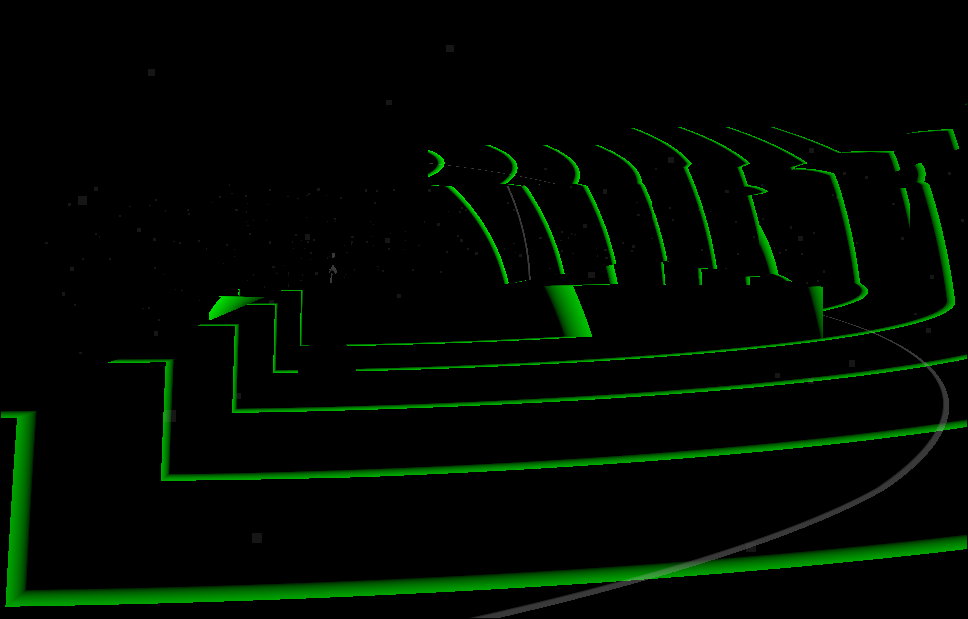

Resonance

Description
You are blind. You can only see through sound. Navigate the enviroment to find her. But becareful what can hear you. This game may cause motion sickness and includes flashing lights
Screenshots & Images

Play The Game
Feedback & Comments
"Wow! Really cool concept! I felt quite disoriented trying to navigate, which made avoiding the monsters particularly difficult. Would have liked a little bit more of a way to determine the level layout, but the game was fun nonetheless! Great entry!" - Binjovi
"Great work! It's really hard to pull off a serious tone in such a tight time constraint, but I think you nailed it. Pretty unique gameplay too!" - Xury46
"This is EASILY one of the best game's I've played in this jam. Short and sweet but the concept alone was amazing and the execution was so so good, idk how you built this game. Stumbling around in the darkness and trying to avoid other things that rely on the same sound you need to see is just an outstanding mechanic, and I like the narrative implication and how it's conceptualized.. I think in terms of matching the theme decay, it could've been made more apparent that your memory is "decaying" over time, I beat each level relatively quickly and never had a sense that I my memory was actually 'decaying' or breaking down, maybe I missed something though. But that's such a MINOR nitpick in a fabulous game. Terrifying, kind of saddening, I hope we get to see more from this in the future!" - simbamakesstuff
"I forgot to mention that the sound design was also amazing for the time within which this was made. Kudos all around, friend :D" - simbamakesstuff